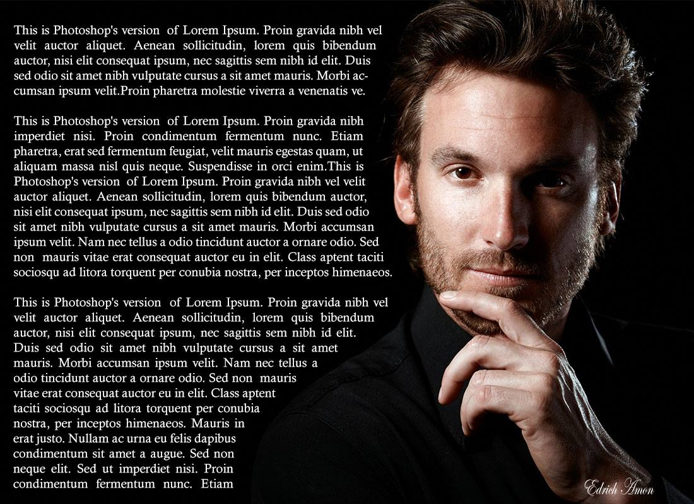

HOW TO DO PHOTOSHOP
First What is Photoshop?
An image editing software developed and manufactured by Adobe Systems Inc. Photoshop is considered one of the leaders in photo editing software. The software allows users to manipulate, crop, resize, and correct color on digital photos. The software is particularly popular amongst professional photographers and graphic designers.
And here are some examples of Endrich's Work
So as you can see here its just a simple edit.
You can clearly see a 2 images together
with a adjustment of the opacity to mix
the dark background and some desinged font for
the text.

So for this one its not very complex
its just two photos combined together and
placed witbh some letters and fonts